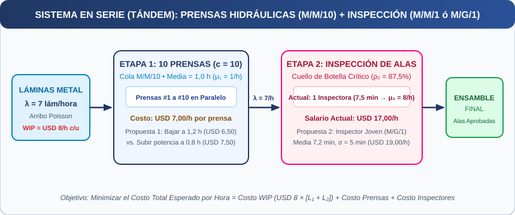

Universidad Católica de Santiago del Estero
Modelos y Simulación — Ciclo Lectivo 2026
.xlsx): Realizar al menos 10 réplicas independientes de 120 horas efectivas de recolección cada una, utilizando una semilla aleatoria diferente en cada réplica. Cada réplica deberá proporcionar 120 horas efectivas de recolección de datos, adicionales al período de calentamiento determinado. Para favorecer la comparación entre alternativas, se recomienda utilizar semillas comunes entre escenarios equivalentes, manteniendo una semilla diferente para cada réplica. Determinar y justificar el período de calentamiento mediante un procedimiento gráfico o estadístico. Podrá utilizarse, por ejemplo, el método gráfico de Welch, el análisis de series temporales acumuladas u otro procedimiento equivalente debidamente fundamentado. Excluir dicho período de la recolección de resultados. Si se decide no utilizar calentamiento, deberá demostrarse que las condiciones iniciales representan adecuadamente el estado estacionario.
.docx): Elabore un informe escrito detallado con la formulación y resolución de los incisos a), b), c) y d), la evaluación de las propuestas y la recomendación cuantitativa final.
.pptx / PDF): Prepare una presentación ejecutiva para exponer los resultados obtenidos y demostrar en vivo las simulaciones realizadas en FlexSim.
La Vicepresidencia de Manufactura y la Gerencia de Producción de la Fábrica Argentina de Aviones (FAdeA) han manifestado preocupación por el elevado inventario en proceso (WIP) observado en las áreas de prensado e inspección aeronáutica.
Durante una reciente recorrida de planta en horario operativo, se detectaron de forma puntual cinco láminas de metal esperando en el sector de prensas para ser conformadas en secciones de ala, y trece secciones de ala en la estación de inspección (una en proceso de revisión y doce aguardando en la fila contigua).
Dado que cada sección de ala representa una inversión de capital de cientos de miles de dólares en aleaciones de alta exigencia, acumular unidades inmovilizadas genera costos financieros y de almacenamiento considerables. La Gerencia de Producción ha convocado al especialista de Investigación de Operaciones y Simulación para modelar estocásticamente el flujo productivo, contrastar analítica y empíricamente las propuestas de mejora y formular recomendaciones cuantitativas.
Éste es el sistema operativo que el equipo de ingeniería está estudiando:
| Propuesta de Mejora Evaluada | Cambio Operativo Planteado | Impacto en Costos Directos |
|---|---|---|
| Operación Normal (Base) | 10 prensas ($t_{s1} = 1,0\text{ h}$ exp.) + 1 inspectora actual ($t_{s2} = 7,5\text{ min}$ exp.) | Prensas: $\text{USD } 7,00/\text{h}$ c/u • Inspectora: $\text{USD } 17,00/\text{h}$ • WIP: $\text{USD } 8,00/\text{u}\cdot\text{h}$ |
| Propuesta 1 (Ajuste de Potencia en Prensas) | La Gerencia propone reducir la potencia de las prensas bajo la hipótesis de que ello podría disminuir la congestión observada en inspección. Evalúe críticamente esta hipótesis (elevando el tiempo medio de formado a $1,2\text{ horas}$). Contraste alternativo: Incrementar el poder al máximo reduce el tiempo medio a $0,8\text{ horas}$. |
Bajar poder ($1,2\text{ h}$): reduce costo de cada prensa de $\text{USD } 7,00$ a $\text{USD } 6,50/\text{h}$. Subir poder ($0,8\text{ h}$): eleva costo de cada prensa a $\text{USD } 7,50/\text{h}$. |
| Propuesta 2 (Recurso Alternativo con Mayor Velocidad) | Incorporar un recurso de inspección alternativo con menor tiempo medio de servicio: distribución de probabilidad con media de $7,2\text{ minutos}$ y desviación estándar $\sigma = 5\text{ minutos}$ (modelo $M/G/1$). | El recurso alternativo tiene un costo laboral total de $\text{USD } 19,00/\text{hora}$ (frente a $\text{USD } 17,00/\text{h}$ actuales). |
Usted es el especialista en Investigación de Operaciones y Simulación convocado por la Gerencia de Producción. Se le solicita aplicar la teoría de colas y la experimentación en FlexSim para evaluar el impacto de cada propuesta sobre el inventario en proceso y los costos horarios, formulando recomendaciones cuantitativas:

.docx): Informe técnico completo para la Vicepresidencia de Manufactura y la Gerencia de Producción de FAdeA con el desglose de los 5 elementos del sistema, cálculos de red en serie y justificación económica de los incisos a), b), c) y d)..xlsx): Cuadro comparativo de costos horarios y recolección estadística de las 10 réplicas independientes de 120 horas efectivas de recolección en FlexSim para cada alternativa (con media, desvío estándar e intervalo de confianza del 95 %)..fsm): Modelo de simulación en serie (Source $\to$ Queue1 $\to$ 10 Processors Prensas $\to$ Queue2 $\to$ Processor(s) Inspección $\to$ Sink)..pptx / PDF): Soporte visual para la defensa oral y demostración en vivo el día de la Demo.MS2026_TF_Grupo2_Informe.docx (Informe técnico y administrativo completo).MS2026_TF_Grupo2_Datos.xlsx (Planilla estructurada con memoria de cálculo y recolección estadística).MS2026_TF_Grupo2_ModelosFlexSim.zip o archivos .fsm ejecutables individuales.MS2026_TF_Grupo2_Presentacion.pptx o .pdf (Diapositivas de soporte de la defensa oral)..fsm abran y ejecuten sin errores en FlexSim. Archivos corruptos o que no ejecuten invalidan la parte práctica de simulación.La calificación final contempla la coherencia metodológica y el rigor técnico en los cuatro artefactos obligatorios:
| Criterio de Evaluación | Artefacto Asociado | Desempeño Esperado (Nivel Avanzado / Competente) | Ponderación |
|---|---|---|---|
| 1. Formulación del problema y relevamiento de datos | Documento Word (.docx) + Planilla Excel (.xlsx) | Identificación exhaustiva de variables de entrada ($\lambda, \mu, c$), unidades de tiempo homogéneas y supuestos estocásticos del sistema. | 15% |
| 2. Construcción del modelo conceptual | Documento Word (.docx) | Abstracción precisa del sistema real definiendo Entidades, Atributos, Actividades, Estados, Eventos y Notación de Kendall. | 15% |
| 3. Implementación computacional del modelo | Modelo FlexSim (.fsm) | Modelo robusto en FlexSim con lógica consistente, objetos bien configurados (red en serie, Round Robin if Available, Gamma) y ejecución estable. |
20% |
| 4. Verificación, validación y recolección estadística | Planilla Excel (.xlsx) + Documento Word (.docx) | Registro de al menos 10 réplicas independientes de 120 horas efectivas simuladas en Excel, cálculo de medias, desvíos estándar e intervalos de confianza del 95 %, y validación frente a las fórmulas teóricas de colas. | 20% |
| 5. Análisis de resultados y sensibilidad | Planilla Excel (.xlsx) + Documento Word (.docx) | Interpretación profunda de indicadores ($\rho_1, \rho_2, L_1, L_2, W_1, W_2$, desglose de costos horarios) y comparación rigurosa entre escenarios. | 15% |
| 6. Conclusiones y toma de decisiones | Documento Word (.docx) + Presentación Demo | Recomendaciones operativas y económicas sólidamente respaldadas por la evidencia cuantitativa del balance de costos de producción. | 10% |
| 7. Defensa oral, Presentación y Demo en vivo | Presentación (.pptx/PDF) + Demo FlexSim | Claridad expositiva, dominio técnico ante preguntas de la cátedra y demostración fluida del modelo el día de la Demo. | 5% |